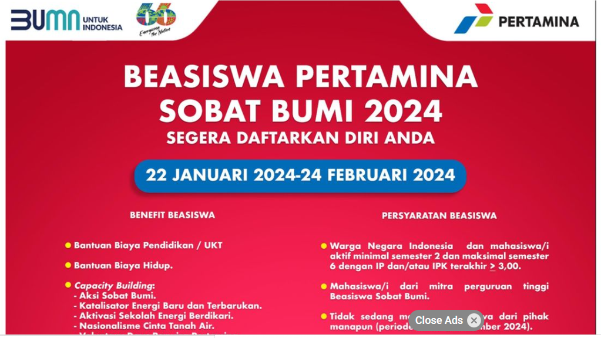

Artikel Berita
Sosialisasi Beasiswa Pertamina Sobat Bumi 2024 bertajuk “Unlimited Opportunities with Pertamina Scholarship”
by Admin / 29 Februari 2024
Sobat Bumi Lampung, komunitas penerima beasiswa pertamina sobat bumi menyelenggarakan acara sosialisasi khusus mengenai Beasiswa Pertamina Sobat Bumi 2024. Kegiatan ini dilaksanakan pada Jumat, 17 Februari 2024 di Aula Gedung F Institut Teknologi Sumatera, yang dimulai pukul 09.00 – 12.30 WIB. Kegiatan ini bertujuan untuk mengenalkan Beasiswa Pertamina Sobat Bumi serta memberikan wawasan dan kiat kepada para calon penerima Beasiswa Pertamina Sobat Bumi 2024. Mengenai strategi yang efektif untuk lolos dalam seleksi, dengan fokus pada aspek-aspek penting seperti penulisan esai, wawancara, dan Focus Group Discussion.
Acara ini dihadiri oleh Wakil Rektor Bidang Umum dan Keuangan ITERA Dr. Rahayu Sulistyorini, S.T., M.T., Beliau menyampaikan “Meskipun kuota terbatas, semangat kita untuk meraih beasiswa tak boleh padam. Mari bersaing dan menjadi mahasiswa yang kompetitif”. Selain di hadiri oleh mahasiswa ITERA, juga dihadiri oleh tim Kemahasiswaan ITERA. Acara ini dihadiri sekitar 180 mahasiswa yang penuh antusias dengan Beasiswa Pertamina Sobat Bumi 2024, hal ini dibuktikan dengan banyaknya mahasiswa yang bertanya terkait dengan beasiswa ini.
Sosialisasi diawali dengan pengenalan Beasiswa Pertamina Sobat Bumi, yang disampaikan oleh tim Kemahasiswaan Bapak Yudha Rahman, ST., MT. yang juga merupakan alumni penerima Beasiwa Pertamina Sobat Bumi tahun 2012. yang menjelaskan terkait apa itu Beasiswa Pertamina Sobat Bumi, benefit yang didapatkan, sejarah terbentuknya dan berbagai aksi yang telah dilaksanakan. Kemudian dilanjutkan dengan bahasan selanjutnya yaitu strategi penulisan esai, wawancara, dan Focus Group Discussion yang disampaikan langsung oleh penerima beasiswa pertamina sobat bumi.